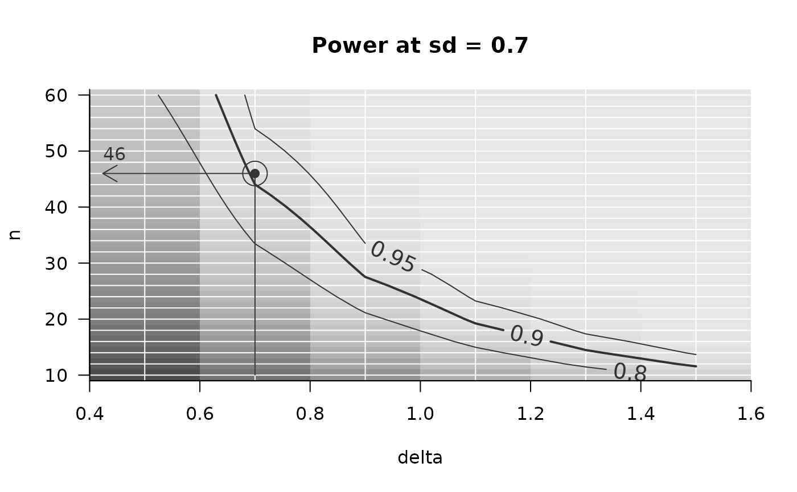
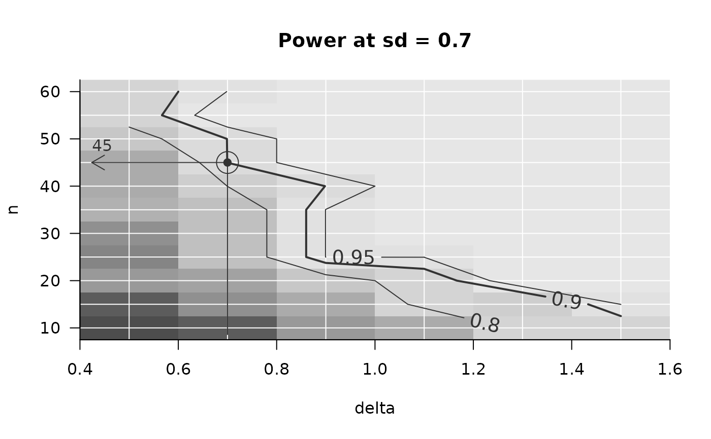
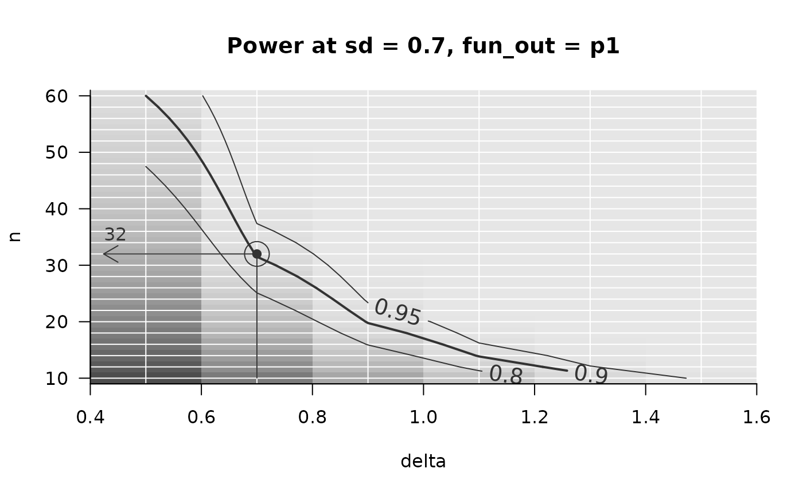

PowerGrid is an apply-like function, allowing to evaluate a function at the
crossings of a set of parameters. The result is saved in an array with
attributes that optimize further usage by functions in package
powergrid. In particular, performing a function iteratively (using
parallel computing if required) is implemented conveniently. The typical use
is for evaluating statistical power at a grid of assumed parameters.
Usage
PowerGrid(
pars,
fun,
more_args = NULL,
n_iter = NA,
summarize = TRUE,
summary_function = mean,
parallel = FALSE,
n_cores = future::availableCores() - 1
)Arguments
- pars
A list where each element is a numeric vector of values named as one of the arguments of
fun.funis applied to the full grid crossing the values of each of these parameters. If you aim to study other than numeric parameters, see details.- fun
A function to be applied at each combination of
pars. Arguments may contain all element names ofparsandmore_args. Output should always be a numeric vector, typically of length one. However, a if you want to work with multiple outpus, each can be an element of the returned numeric vector.- more_args
Fixed arguments to
funthat are not inpars. (internally used in.mapplyfor supplying argumentMoreArgs)- n_iter
If not NA, function
funis appliedn_itertimes at each point in the grid defined bypars.- summarize
Logical indicating whether iterations (if
n_iteris given) are to be summarized bysummary_function.- summary_function
A function to be applied to aggregate across iterations. Defaults to
mean, ignored whenkeep_iters== TRUE or whenis.na(n_iter).- parallel
Logical indicating whether parallel computing should be applied. If TRUE, future::future_replicate is used internally.
- n_cores
Passed on to future_replicate
Value
An array of class "power_array", with attributes containing
informations about input arguments, summary status, the presence of
multiple function outputs and more. This object class is handled sensibly
by functions in package powergrid, including Example,
PowerPlot, and GridPlot.
Details
Function fun is evaluated at each combination of the argument values
listed in pars and its results are stored in an array of class
power_array, whose dimensions (and dimnames()) are defined by
pars. For this to work, the element names of pars must match
the argument names of fun.
Further arguments to fun
If input parameters to fun are not
to be part of the grid, but rather further settings, these can be passed on
to fun through the argument more_args as a list with names
reflecting the arguments of fun to be set.
Storing multiple outputs from fun
You may have a function fun that returns a vector with length larger
than one, as long as it is a single vector. When fun returns a vector
with length larger than one, the power_array will have an additional
dimension fun_out, with levels named after the names of fun's
return vector (if given).
Non-numeric parameters
You may want to study the effect of non-numeric parameters. This option is
not supported for the argument pars, since the essential powergrid
functions link{Example}, link{PowerPlot}, and
link{GridPlot} need a direction to search. Nonetheless, you can study
non-numeric parameters by having function fun returning multiple values,
as described above.
Evaluating a function over iterations
If n_iter is not NA (the default) but an integer, function fun
is evaluated n_iter times. This will add an additional dimension 'iter' to
the resulting array of class power_array. If your simulation is heavy, you
may wanna set parallel = TRUE and choose the n_cores, invoking
parallel computing using tfuture::future_replicate.
You may summarize the object with individual iterations across these
iterations using function SummarizeIterations. Note that both
summarized and non-summarized output of PowerGrid have class
power_array. The summary status is saved in the attributes. This allows
the powergrid utilities Example, PowerPlot,
and GridPlot to do something sensible also with non-summarized
objects.
Reproducibility
The current status of .Random.seed is stored in the attribute random_seed
(which is a list). To reproduce a call of PowerGrid involving randomness,
precede new call to PowerGrid by .Random.seed = attr(<your_power_array>,
which = 'random.seed')[[1]]. Note that if you Refine() your power_array, the
.Random.seed at the moment of updating is appended to the random.seed
attribute. So, to reconstruct a refined power_array, run the original call
to PowerGrid after .Random.seed = attr(<your_power_array>, which =
'random.seed')[[1]], and the the call to Refine after .Random.seed =
attr(<your_power_array>, which = 'random.seed')[[2]], etc.
See also
Refine() for adding iterations or parameter combinations to
exsiting power_array object, SummarizeIterations() for summarizing a
power_array object containing individual iterations, ArraySlicer() and
[.power_array for reducing the dimenstiona of a power_array object,
correctly updating its attributes.
Examples
## =======================================================
## most basic use case, calculating power when
## power function is available:
## =======================================================
## Define grid of assumptions to study:
sse_pars = list(
n = seq(from = 10, to = 60, by = 2), # sample size
delta = seq(from = 0.5, to = 1.5, by = 0.2), # effect size
sd = seq(.1, .9, .2)) # standard deviation
## Define function that calculates power based on these assumptions:
PowFun <- function(n, delta, sd){
ptt = power.t.test(n = n/2, delta = delta, sd = sd,
sig.level = 0.05)
return(ptt$power)
}
## Evaluate at each combination of assumptions:
powarr = PowerGrid(pars = sse_pars, fun = PowFun, n_iter = NA)
summary(powarr)
#> Object of class: power_array
#>
#> Range of values: [0.12, 1]
#> Evaluated at:
#> n 10, 12, 14, 16, 18, 20, 22, 24, 26, 28, 30, 32,
#> n 34, 36, 38, 40, 42, 44, 46, 48, 50, 52, 54, 56,
#> n 58, 60
#> delta 0.5, 0.7, 0.9, 1.1, 1.3, 1.5
#> sd 0.1, 0.3, 0.5, 0.7, 0.9
## =================================
## Use powergrid utilities on result
## =================================
## get required sample size n, when delta is .7, sd = .5, for achieving a
## power of 90%:
Example(powarr, example = list(delta = .7, sd = .5), target_value = .9)
#> ================================================
#> To achieve the target value of at most 0.9 assuming
#> delta = 0.7
#> sd = 0.5,
#> the minimal required n = 24
#> ------------------------------------------------
#> Description: Method "step" was used to find the
#> lowest n in the searched grid that yields a
#> target_value (typically power) of at least 0.9.
#> ================================================
## Draw a figure illustrating how the required n depends on delta (given an
## sd of .7):
PowerPlot(powarr,
slicer = list(sd = .7), # slice out the plane with sd = .7
target_value = .9, # set target power to 90%, defining the thick line
example = list(delta = .7) # Highlight the example with arrow
)

## Slice out a sub-array (making sure attributes stay intact for further use in
## powergrid):
only_n20_delta1.1 =
ArraySlicer(powarr, slicer = list(
n = 20,
delta = 1.1))
summary(only_n20_delta1.1)
#> Object of class: power_array
#>
#> Range of values: [0.73, 1]
#> Evaluated at:
#> sd 0.1, 0.3, 0.5, 0.7, 0.9
## Indexing may also be used, but note that the name of the remaining dimension
## is lost. Therefore, use ArraySlicer when you want to keep working with the
## object in powergrid.
only_n20_delta1.1 = powarr[n = 20, delta = 1.1, ]
summary(only_n20_delta1.1)
#> Object of class: power_array
#>
#> Range of values: [0.47, 1]
## =======================================================
## Simulation over iterations when no power
## function is available
## =======================================================
## Using the same assumptions as above
sse_pars = list(
n = seq(from = 10, to = 60, by = 5),
delta = seq(from = 0.5, to = 1.5, by = 0.2),
sd = seq(.5, 1.5, .2))
## Define a function that results in TRUE or FALSE for a successful or
## non-successful (5% significant) simulated trial:
PowFun <- function(n, delta, sd){
x1 = rnorm(n = n/2, sd = sd)
x2 = rnorm(n = n/2, mean = delta, sd = sd)
t.test(x1, x2)$p.value < .05
}
## In call to PowerGrid, setting n_iter prompts PowerGrid to evaluate
## the function iteratively at each combination of assumptions:
n_iter = 20
powarr = PowerGrid(pars = sse_pars, fun = PowFun,
n_iter = n_iter)
## By default, the iterations are summarized (by their mean), so:
dimnames(powarr)
#> $n
#> [1] "10" "15" "20" "25" "30" "35" "40" "45" "50" "55" "60"
#>
#> $delta
#> [1] "0.5" "0.7" "0.9" "1.1" "1.3" "1.5"
#>
#> $sd
#> [1] "0.5" "0.7" "0.9" "1.1" "1.3" "1.5"
#>
summary(powarr) # indicates that iterations were summarized (not stored)
#> Object of class: power_array
#> Containing summary over 20 iterations,
#> summarized by function `summary_function` (for
#> function definition, see attribute
#> `summary_function`).
#> Range of values: [0, 1]
#> Evaluated at:
#> n 10, 15, 20, 25, 30, 35, 40, 45, 50, 55, 60
#> delta 0.5, 0.7, 0.9, 1.1, 1.3, 1.5
#> sd 0.5, 0.7, 0.9, 1.1, 1.3, 1.5
## =================================
## keeping individual iterations
## =================================
## To keep individual iterations, set summarize to FALSE:
powarr_no_summary = PowerGrid(pars = sse_pars, fun = PowFun,
n_iter = n_iter , summarize = FALSE)
dimnames(powarr_no_summary) # additional dimension "iter"
#> $n
#> [1] "10" "15" "20" "25" "30" "35" "40" "45" "50" "55" "60"
#>
#> $delta
#> [1] "0.5" "0.7" "0.9" "1.1" "1.3" "1.5"
#>
#> $sd
#> [1] "0.5" "0.7" "0.9" "1.1" "1.3" "1.5"
#>
#> $iter
#> [1] "1" "2" "3" "4" "5" "6" "7" "8" "9" "10" "11" "12" "13" "14" "15"
#> [16] "16" "17" "18" "19" "20"
#>
summary(powarr_no_summary)
#> Object of class: power_array
#> Containing output of 20 individual iterations.
#> Range of values: [0, 1]
#> Evaluated at:
#> n 10, 15, 20, 25, 30, 35, 40, 45, 50, 55, 60
#> delta 0.5, 0.7, 0.9, 1.1, 1.3, 1.5
#> sd 0.5, 0.7, 0.9, 1.1, 1.3, 1.5
## To summarize this object containing iterations, use the SummarizeIterations
## function. Among other things, this assures that attributes relevant for
## further use in powergrid's functionality are kept intact.
powarr_summarized =
SummarizeIterations(powarr_no_summary, summary_function = mean)
dimnames(powarr_summarized)
#> $n
#> [1] "10" "15" "20" "25" "30" "35" "40" "45" "50" "55" "60"
#>
#> $delta
#> [1] "0.5" "0.7" "0.9" "1.1" "1.3" "1.5"
#>
#> $sd
#> [1] "0.5" "0.7" "0.9" "1.1" "1.3" "1.5"
#>
summary(powarr_summarized)
#> Object of class: power_array
#> Containing summary over 20 iterations,
#> summarized by function `mean` (for function
#> definition, see attribute `summary_function`).
#> Range of values: [0, 1]
#> Evaluated at:
#> n 10, 15, 20, 25, 30, 35, 40, 45, 50, 55, 60
#> delta 0.5, 0.7, 0.9, 1.1, 1.3, 1.5
#> sd 0.5, 0.7, 0.9, 1.1, 1.3, 1.5
## This summarized `power_array` is no different from a version that was
## directly summarized.
## Note that Example and Powerplot detect when a `power_array` object is not
#summarized, and behave sensibly with a warning:
Example(powarr_no_summary, example = list(delta = .7, sd = .5), target_value = .9)
#> Warning: The object 'x' you supplied to Example() contains individual iterations. For finding an example, these were automatically summarized across iterations using the function given in argument `summary_function`.
#> ================================================
#> To achieve the target value of at most 0.9 assuming
#> delta = 0.7
#> sd = 0.5,
#> the minimal required n = 30
#> ------------------------------------------------
#> Description: Method "step" was used to find the
#> lowest n in the searched grid that yields a
#> target_value (typically power) of at least 0.9.
#> ================================================
PowerPlot(powarr_no_summary,
slicer = list(sd = .7), # slice out the plane with sd = .7
target_value = .9, # set target power to 90%, defining the thick line
example = list(delta = .7) # Highlight the example with arrow
)
#> Warning: The object 'x' you supplied to PowerPlot contains individual iterations. For sensible plotting, these were automatically summarized across iterations using the function given in argument `summary_function`.
#> Warning: The object 'x' you supplied to Example() contains individual iterations. For finding an example, these were automatically summarized across iterations using the function given in argument `summary_function`.

#=======================================================
# Multiple outputs are automatically handled #
#=======================================================
## Parameter assumptions
sse_pars = list(
n = seq(from = 10, to = 60, by = 2),
delta = seq(from = 0.5, to = 1.5, by = 0.2),
sd = seq(.5, 1.5, .2))
## A function with two outputs (the power at two significance levels)
TwoValuesFun <- function(n, delta, sd){
p5 = power.t.test(n = n, delta = delta, sd = sd, sig.level = .05)$power
p1 = power.t.test(n = n, delta = delta, sd = sd, sig.level = .01)$power
return(c('p5' = p5, 'p1' = p1))
}
powarr_two_returns = PowerGrid(sse_pars, TwoValuesFun)
## multiple outputs result in an additional dimension:
dimnames(powarr_two_returns)
#> $n
#> [1] "10" "12" "14" "16" "18" "20" "22" "24" "26" "28" "30" "32" "34" "36" "38"
#> [16] "40" "42" "44" "46" "48" "50" "52" "54" "56" "58" "60"
#>
#> $delta
#> [1] "0.5" "0.7" "0.9" "1.1" "1.3" "1.5"
#>
#> $sd
#> [1] "0.5" "0.7" "0.9" "1.1" "1.3" "1.5"
#>
#> $fun_out
#> [1] "p5" "p1"
#>
summary(powarr_two_returns)
#> Object of class: power_array
#>
#> Range of values:
#> p5: [0.1, 1]
#> p1: [0.03, 1]
#> Evaluated at:
#> n 10, 12, 14, 16, 18, 20, 22, 24, 26, 28, 30, 32,
#> n 34, 36, 38, 40, 42, 44, 46, 48, 50, 52, 54, 56,
#> n 58, 60
#> delta 0.5, 0.7, 0.9, 1.1, 1.3, 1.5
#> sd 0.5, 0.7, 0.9, 1.1, 1.3, 1.5
## note that you need to tell Example and other powergrid functions, which
## of the outputs you are interested in:
Example(powarr_two_returns, example = list(delta = .7, sd = .5, fun_out = 'p1'),
target_value = .9)
#> ================================================
#> To achieve the target value of at most 0.9 assuming
#> delta = 0.7
#> sd = 0.5
#> fun_out = p1,
#> the minimal required n = 18
#> ------------------------------------------------
#> Description: Method "step" was used to find the
#> lowest n in the searched grid that yields a
#> target_value (typically power) of at least 0.9.
#> ================================================
PowerPlot(powarr_two_returns,
slicer = list(sd = .7, fun_out = 'p1'), # slice out the plane with the
# output of interest
target_value = .9, # set target power to 90%, defining the thick line
example = list(delta = .7) # Highlight the example with arrow
)
